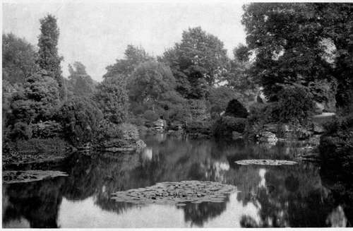
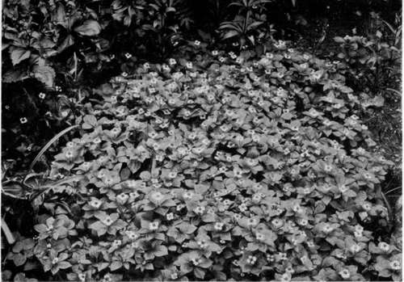
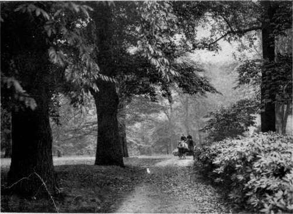
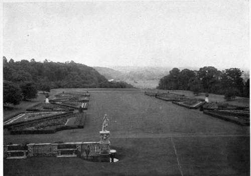
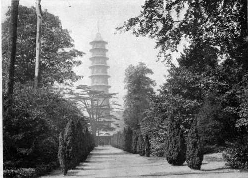
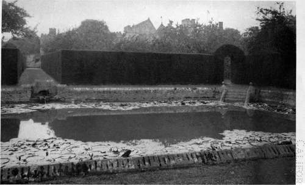

Chapter II. Formal Gardens
Description
This section is from the book "What England Can Teach Us About Gardening", by Wilhelm Miller. Also available from Amazon: What England Can Teach Us About Gardening.
Chapter II. Formal Gardens
Why Americans lavish fabulous sums upon "Italian" gardens, and are usually disappointed with the results —A simple, orderly process by which perfection may be attained.
TO MOST Americans "formal garden" and "Italian garden' ' are synonymous. But there are many types of formal gardening, and not all of them can be seen in Italy. England possesses perfect examples of every kind, and she has also developed a style of formal gardening which is better adapted to the American climate and social conditions than the prevailing Italian style. The Continental styles of formal gardening are too often severe, quasi-public, cold as marble. The best English formal gardens have dignity enough, but they are eloquent of intimate home feeling and gay with flowers.
Nothing is easier than to write a graceful, entertaining essay about formal gardening that will be of no real service to anybody. Mere "art talk" and descriptions of famous places give little help. True, no one can crowd all the art and practice of garden design into a single chapter. But in this chapter I hope to explain why Americans lavish fabulous sums upon formal gardens and why they are usually unhappy over the results. Also I shall set forth a simple, orderly process by which, I believe, any one who can afford a formal garden may have a perfect one.
The reason why many people are willing to "spare no expense" provided they can get an exquisite formal garden is simply this: We all feel instinctively that the supreme test of any garden is personality, and that in the formal garden personality finds its highest expression. Landscape gardening alone can never wholly satisfy man's soul. There must be design. I do not mean to say that landscape gardening lacks design, but in the natural style the design may slowly unfold, while in formal gardening it must instantly appear. And mere perfection of design is not^ enough, for any one can tell on entering a garden whether it reflects the personality of the landscape gardener or of the man who lives there. The artist's work can only show man's mastery over nature; the owner's may express his mastery over himself.
The other side of this truth explains why most formal gardens in America are a failure. The real trouble with them is that they are characterized by self-indulgence. We insist on having everything we want. We crowd in every good thing we have seen in our travels. We back our own taste against all the architects and landscape men, and then we wonder what is lacking and why people laugh behind our backs. Everybody else can see clearly enough what the matter is. It is lack of self-restraint. That very quality explains why English formal gardens are more charming than those of America. One can hardly travel two months in England without perceiving that the dominant trait of British character is self-restraint, while self-indulgence is with us a conspicuous national failing. This is a hard, unpleasant thing to say, but please do not call me an Anglomaniac. I love my own country and would not live in England. Rather ask yourself if it is not true — true in food, drink, clothing, amusements, and all material things. It is only a passing trait, I believe, but I am also confident that it is the only fundamental cause of our failures in formal gardening, while the causes which we all urge to one another are merely superficial and deceive no one but ourselves.
A WATER GARDEN SURROUNDED BY HORTICULTURAL SPICE. IN AMERICA WE SCATTER THESE CONSPICUOUS OBJECTS ALL OVER THE PLACE INSTEAD OF COMBINING THEM SO AS TO MAKE A PICTURE. WE§TONBIRT, COLONEL HOLFORP's ESTATE AT TETBURY, GLOUCESTERSHIRE See page Q.
One of the excuses we all make is that "the plants die," and we blame this on climate. The chief reason why plants die is that we buy "Dutch stuff," simply because it is "cheapest." There is no fault of character here. Most Americans do not know they are buying Dutch trees, shrubs, and evergreens. They mean to buy hardy material, and are heart-broken when it dies after a winter or two. The Dutch plants always look best, and how shall an innocent investor be on his guard ? Apparently there is no way. He must try and lose before he is willing to pay a fair price for American-grown material. But the important point is this: Our climate is not to blame. We can get 90 per cent, of English luxuriance anywhere in America. Proof of this will be found in every chapter of this book.
But the final excuse we all make when driven into a corner is age. Yet we can get 90 per cent, of all the mellowness that age alone can give in four years or less, simply by planting a few big trees, shrubs, and vines. This is costly, but it is the only satisfactory method for people who "can't wait." The other method — planting fast-growing species — is sure to be a sorrow in the end. And there are age-effects particularly appropriate to formal gardens that can be had the first year. For instance, look at plate 6 facing page 16. Can you detect any newness in that garden? Yet the stone-work at the bottom of those steps is all new. If I remember rightly it had not been made a year. In order to make it look old the gardener deliberately planted those two bushes in front of the stone posts. Has he not succeeded? He does this sort of thing regularly whenever old masonry crumbles and repairs are necessary. Any one can soften architecture in this way.
You can even get that ivy effect in one year. There are nurseries where one can buy ivies and forty other vines as long as those in the picture. In every chapter in Part I, I shall show a different and appropriate way of getting the effect of age in four years or less.
Since, then, the real difficulty is within ourselves, and not in outside things, let us see if there is not a right and wrong spirit, and a right and wrong method. Too often the aim of our formal gardens is show, and that is why people dispense with a high enclosure. Our aim should be an intimate revelation of a beautiful home life; but this demands privacy, and privacy is impossible without walls or hedges. One has only to look at these English pictures and think away the enclosures to see that this is so. Moreover, the enclosure must be formal; an irregular one will not do. A formal garden surrounded by wild woods does not look well, because the contrast is too abrupt. The mind demands some transition between architecture and nature. The line must be drawn where man's work ends. Every time we try to impose formal ideas upon the landscape we are sure to fail. A ridiculous example of this is shown in the lower picture on plate 7. How absurd are those small columnar evergreens — in this case Irish yews. How trifling in comparison with the cedar of Lebanon! How much better the picture would be without them! Yet we are forever making artificial vistas and keeping them trim at great expense. Compare now the picture on the top of plate 7. Here we have all that wealth, age, and climate can give, but still something is wrong. The trouble is that this formal garden has no bounds. It goes beyond its proper place and tries to dominate the whole landscape. That is like Canute commanding the sea to roll back. One feels instinctively that to show man's mastery over nature is only evading the real problem, viz., man's mastery over himself.
WE HAVE TO GO TO ENGLAND TO SEE OUR OWN PLANTS LOVED AND USED INTELLIGENTLY. BUNCH BERRY (Cornus Canadensis). See page 7.
TO GET THE ENGLISH GROVE EFFECT WE HAVE ONLY TO CUT OUT THE CROOKED AND SHORT-LIVED TREES AND LET THE REST DEVELOP. WE MUST GET OVER THE SENTIMENTAL NOTION THAT THE AXE SHOULD NEVER BE USED. See pages 56 and 18$.

CAN YOU DETECT ANY NEWNESS IN THIS GARDEN> SOME OF THIS IS ONLY ONE YEAR OLD. HOW THE EFFECT OF AGE WAS SECURED IN THIS FORMAL GARDEN IS EXPLAINED ON PAGE 15 (PENSHURST).
HERE WE HAVE ALL THAT WEALTH, AGE, AND CLIMATE CAN GIVE, BUT SOMETHING IS WRONG. Seepage 16.
"EVERY TIME WE TRY TO IMPOSE FORMAL IDEAS UPON THE LANDSCAPE WE FAIL." THE FORMAL GARDEN BELONGS INSIDE A HIGH WALL OR HEDGE. Seepage 16.
SHALL WATER BE DOMINANT? YES, IF IT IS PLENTIFUL AND CHEAP. NO, IF IT MUST BE TURNED OFF FOR ECONOMY. DIANA'S POOL, PENSHURST. See page 18.
Continue to:
Tags
garden, flowers, plants, England, effects, foliage, gardening